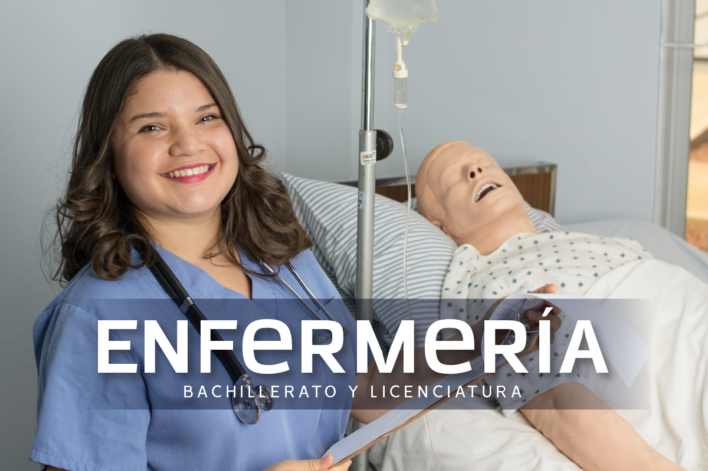
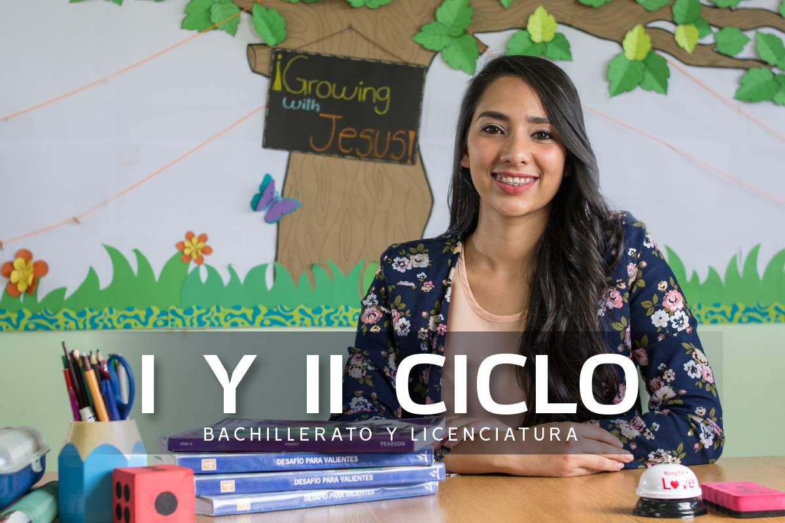
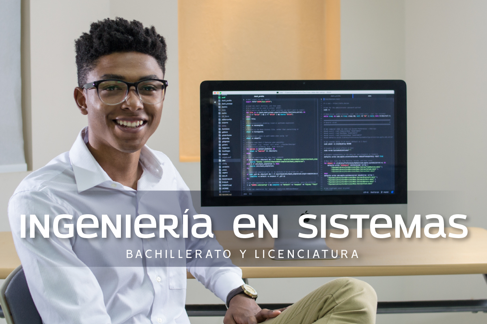
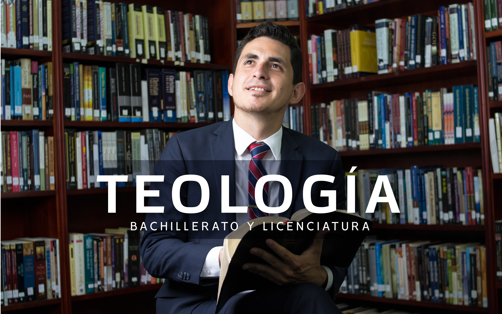
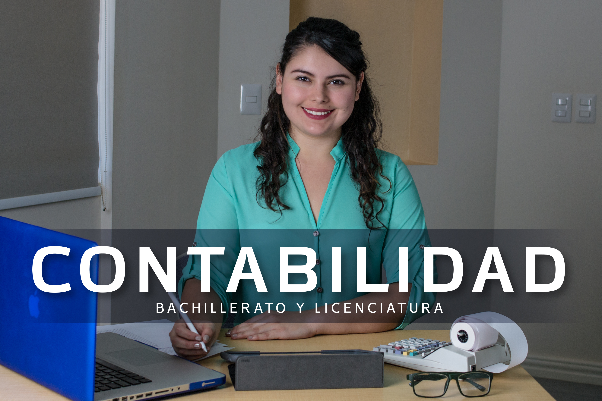

.png)
Carreras que Ofrecemos
- 
- 
- 

- 
Carreras
Enfermeria
Te formarás como profesional capaz de atender las necesidades de los pacientes a nivel física, mental, social y espiritual, teniendo un alto conocimiento científico y habilidades para realizar atención primaria hospitalaria.Formar profesionales responsables, conscientes de su misión, inspirados en los más altos ideales de servicio cristiano dentro de marco que la ética profesional indica. Altamente capacitados y actualizados en los avances tecnológicos y científicos que se requieren para el ejercicio de su profesión dentro de la sociedad en la cual se desarrollan.
Leer MàsTeologia
Es una carrera que te forma como profesional con una clara vocación de servicio a Dios, capacitándote para crear relaciones redentoras con cada ser humano, promoviendo el desarrollo de tus habilidades y competencias para transmitir el evangelio.La Escuela de Teología tiene como objetivo fundamental preparar la nueva generación de Ministros, Líderes Espirituales y Profesores de Enseñanza de Biblia para la iglesia Adventista del Séptimo Día.
Leer MàsIngenieria sistema
Vuélvete un profesional competente y calificado en las diversas áreas de la tecnología, con la habilidad de trabajar en el diseño y desarrollo de software, diseño de redes y programación, desarrollo de proyectos investigativos y prácticos con altos valores éticos y morales.Tener conocimientos generales de acuerdo con objetivos del nivel medio superior. Demostrar capacidad intelectual analítica y poseer estabilidad emocional.
Leer MàsContabilidad
Serás un profesional capaz de asesorar a personas y empresas en cuanto a la toma de decisiones en el area financiera, siendo una de las piezas mas confiable en cualquier organización. esarrollar profesionales con profundos conocimientos de las ciencias administrativas y contables; con habilidades y destrezas capaces de responder adecuadamente a las necesidades del mercado profesional actual.Buscar profesionales buscadores permanentes de la calidad y la excelencia, con espiritu de servicio, alto sentido de responsabilidad social y ética.

Psicologia
Queremos formarte como un Profesional competente con un pensamiento crítico, que esté capacitado para ejercer la psicología con un claro sentido de servicio, tomando en cuenta el desarrollo del ser humano como una unidad de cuerpo, mente y espíritu.Los egresados de nuestra licenciatura en psicología son capaces de administrar pruebas, métodos y técnicas psicológicas en la investigación, exploración, diagnostico, pronostico y tratamiento de la conducta y personalidad. Nuestro programa, refuerza tres áreas de la psicología: Clínica, educativa e industrial.